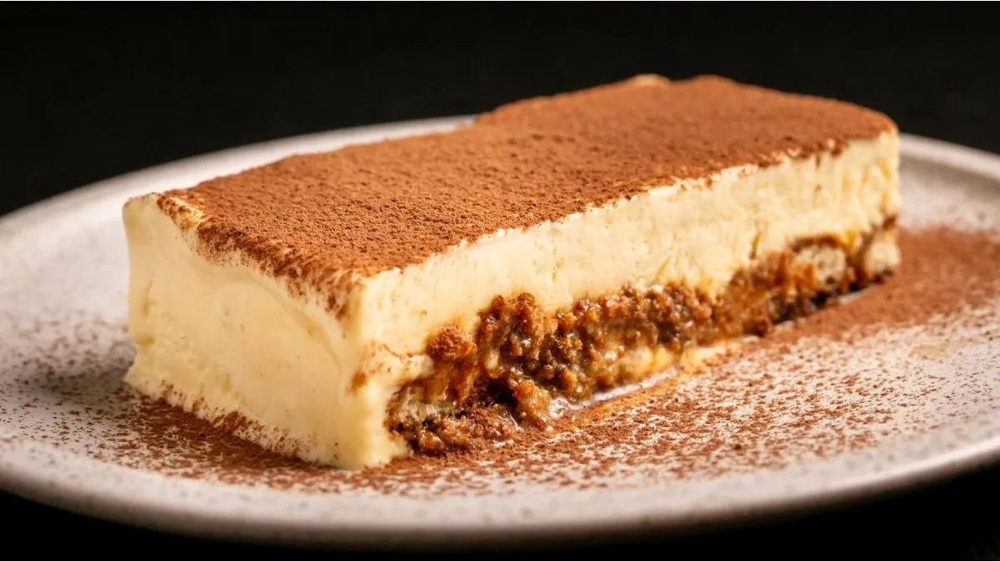

Tiramisú

Ingredientes
Almíbar:
- Agua 200 cc
- Azúcar 200 gr
- Café instantáneo 3-4 cucharadas
Crema de queso:
- Crema de Leche 200 gr
- Queso Mascarpone 300 gr
- Agua 30 cc
- Yemas 4
- Azúcar 80 gr
Armado:
- Vainillas 200gr
- Cacao amargo para espolvorear
Preparación
- Primero preparar el almibar de café
- En un olla poner el agua (00 cc) y el azucar (200 gr) y calentar
- dejar que hierva durante 5 minutos y retirar del fuego
- Diluir el café en un vaso con agua y agregar a la olla de agua y azucar y dejar enfriar
- Preparar la crema de queso
- Batir la crema de leche a medio punto
- Por otro lado poner en un voul de metal las 4 yemas, el agua y el azucar y colocar sobre un baño maría durante 4 o 5 minutos
- Batir con batidora electrica hasta que este a temperatura amiente
- Mezclar la crema de leche con el queso Mascarpone hasta que quede uniforme
- Agregar la mezcla de las yemas
- Para el armado del tiramisú, armar una base con las vainillas mojando cada una en el almiar de Café
- Volcar la mitad de la crema de queso intentando cubrir todas lsa vainillas
- Agregar otra capa de vainillas y también de crema
- Dejar 2 horas en la heladera para que quede firme
- Espolvorear el cacao amargo
- Disfrutar
Ir a la página principal